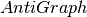

k_components¶
-
k_components(G, min_density=0.95)[source]¶ Returns the approximate k-component structure of a graph G.
A
 -component is a maximal subgraph of a graph G that has, at least,
node connectivity : we need to remove at least nodes to break it
into more components. -components have an inherent hierarchical
structure because they are nested in terms of connectivity: a connected
graph can contain several 2-components, each of which can contain
one or more 3-components, and so forth.
-component is a maximal subgraph of a graph G that has, at least,
node connectivity : we need to remove at least nodes to break it
into more components. -components have an inherent hierarchical
structure because they are nested in terms of connectivity: a connected
graph can contain several 2-components, each of which can contain
one or more 3-components, and so forth.This implementation is based on the fast heuristics to approximate the
-component sturcture of a graph [1]. Which, in turn, it is based on
a fast approximation algorithm for finding good lower bounds of the number
of node independent paths between two nodes [2].Parameters: - G (NetworkX graph) – Undirected graph
- min_density (Float) – Density relaxation treshold. Default value 0.95
Returns: k_components – Dictionary with connectivity level
as key and a list of
sets of nodes that form a k-component of level as values.Return type: Examples
>>> # Petersen graph has 10 nodes and it is triconnected, thus all >>> # nodes are in a single component on all three connectivity levels >>> from networkx.algorithms import approximation as apxa >>> G = nx.petersen_graph() >>> k_components = apxa.k_components(G)
Notes
The logic of the approximation algorithm for computing the
-component
structure [1] is based on repeatedly applying simple and fast algorithms
for -cores and biconnected components in order to narrow down the
number of pairs of nodes over which we have to compute White and Newman’s
approximation algorithm for finding node independent paths [2]. More
formally, this algorithm is based on Whitney’s theorem, which states
an inclusion relation among node connectivity, edge connectivity, and
minimum degree for any graph G. This theorem implies that every
-component is nested inside a -edge-component, which in turn,
is contained in a -core. Thus, this algorithm computes node independent
paths among pairs of nodes in each biconnected part of each -core,
and repeats this procedure for each from 3 to the maximal core number
of a node in the input graph.Because, in practice, many nodes of the core of level
inside a
bicomponent actually are part of a component of level k, the auxiliary
graph needed for the algorithm is likely to be very dense. Thus, we use
a complement graph data structure (see ) to save memory.
AntiGraph only stores information of the edges that are not present
in the actual auxiliary graph. When applying algorithms to this
complement graph data structure, it behaves as if it were the dense
version.See also
References
[1] (1, 2) Torrents, J. and F. Ferraro (2015) Structural Cohesion: Visualization and Heuristics for Fast Computation. http://arxiv.org/pdf/1503.04476v1 [2] (1, 2) White, Douglas R., and Mark Newman (2001) A Fast Algorithm for Node-Independent Paths. Santa Fe Institute Working Paper #01-07-035 http://eclectic.ss.uci.edu/~drwhite/working.pdf [3] Moody, J. and D. White (2003). Social cohesion and embeddedness: A hierarchical conception of social groups. American Sociological Review 68(1), 103–28. http://www2.asanet.org/journals/ASRFeb03MoodyWhite.pdf